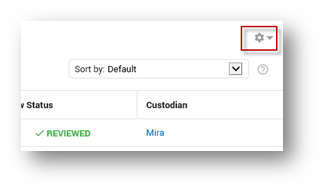
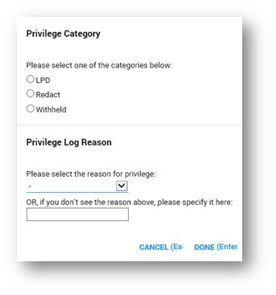
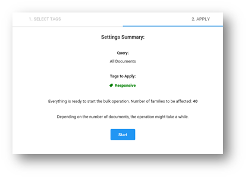
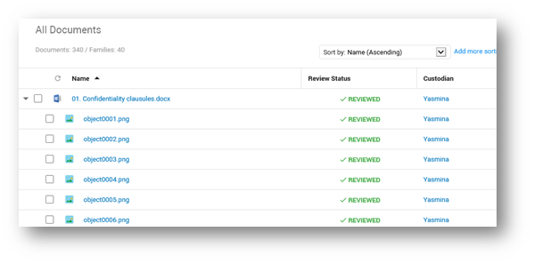
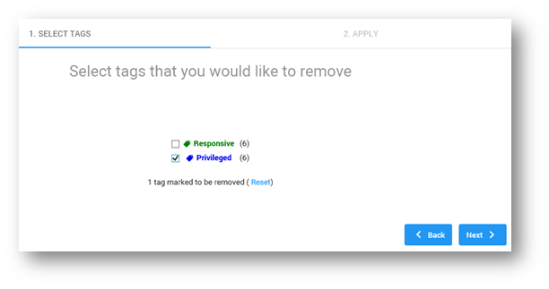

Select Bulk Tagging in the Document List via the Settings icon.

-
Depending on the selected List View (Flat List or Partial/Full Family Tree) and whether you selected documents in the Document List, you can tag or untag Documents, Families or the Selection.

Click or press Shift + (key specified on the tag) to select a tag.
|
|
Note:The available (sub)tags may be different for your specific use.
|

When a tag is selected, you can add other applicable tags that are defined. Tags can be added by the Administrator.
If documents are privileged, define a privileged category and reason.

- Select a privilege category.
- Select a privilege log reason from the dropdown list box.
Privileged Categories and Privileged Log Reasons are created separately for each matter; this means you probably have a different set of categories/log reasons to choose from than the ones shown in the example above. - If you do not see the correct reason, specify one yourself.
- If you are done, click the Done button or push the Enter key.
- If you are having second thoughts, click the Cancel button or push the Escape key.
Click Next. The Apply tab (step 2) will appear.

Click Start. The number of Tagged Documents/Families will appear.

Click Done.You will return to the Document List, with all the targeted documents tagged and marked as being reviewed.

To untag, select Bulk Tagging > Untag Families/Documents/Selection. In the next screen, you will see a list of all the tags applicable to the selected items.

Select one or more tags that you would like to remove. This can be Parent (for example, Responsive, Not Responsive) and/or Child tags (for example, Privileged, Confidential).

Click Next.
Click Start.

Click Done.